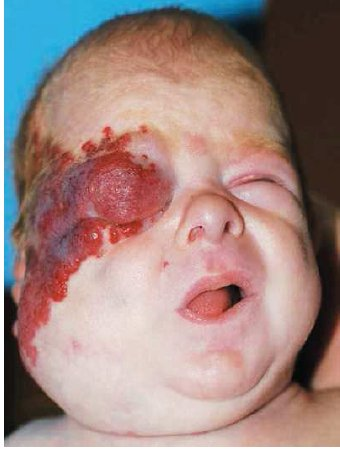
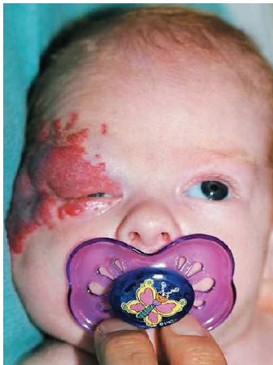
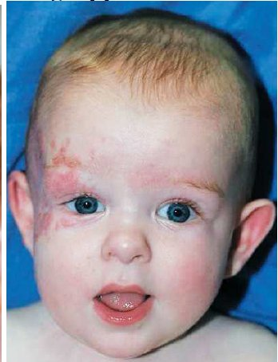

Haemangiom Behandlung
In den letzten Jahren hat die Therapie mit Propranolol einen rasanten Siegeszug angetreten. Sie hat die Cortisontherapie, die bis dahin bei problematisch lokalisierten Hämangiomen angewandt wurde,nahezu abgelöst. Alle Fälle sprachen auf die Behandlung an. Besonders beeindruckend war dabei, dass meist bereits schon nach wenigen Tagen eine Besserung eintrat Propranolol - ein ß-2-Blocker - ist in der Kinder-Kardiologie seit vielen Jahren bekannt.
 9 Wochen alt,Prednisolon-Therapie seit 4 Wochen
in den ersten 2 Wochen 2mg/kg, danch 3mg/kg.
 10 Wochen alt,
Prednisolon-Therapie seit 6 Wochen, Propranolol 2mg/kg/KG seit 1 Woche
 6 Monate alt,
Prednisolon-Therapie seit 3 Mon. beendet; Propranolol 2mg/kg/KG
Erstpublikation einer französichen Arbeitsgruppe:
N England J Med 358:24 2649-2651 (2008) (Leaute´- Labreze Ch;Dumas de laRoque E.; Hubiche T.; Boralevi F; Thambo J.B.; Taieb A. (13.06.08) "Propranolol for severe haemangiomas of infancy".